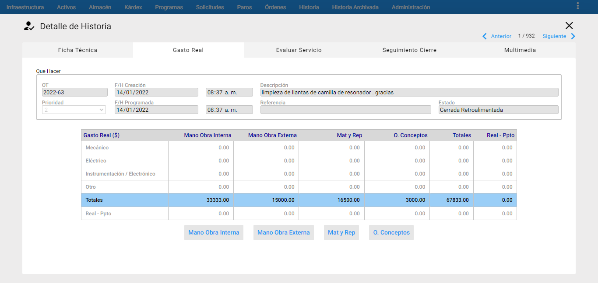
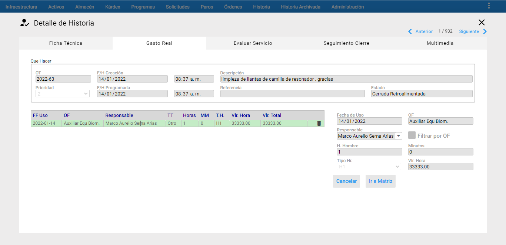
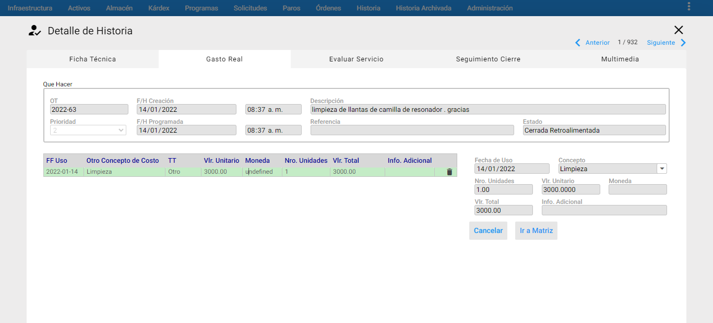
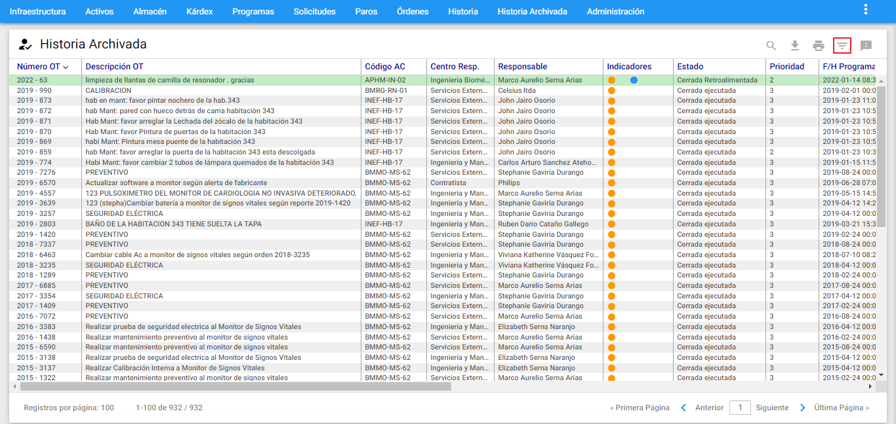
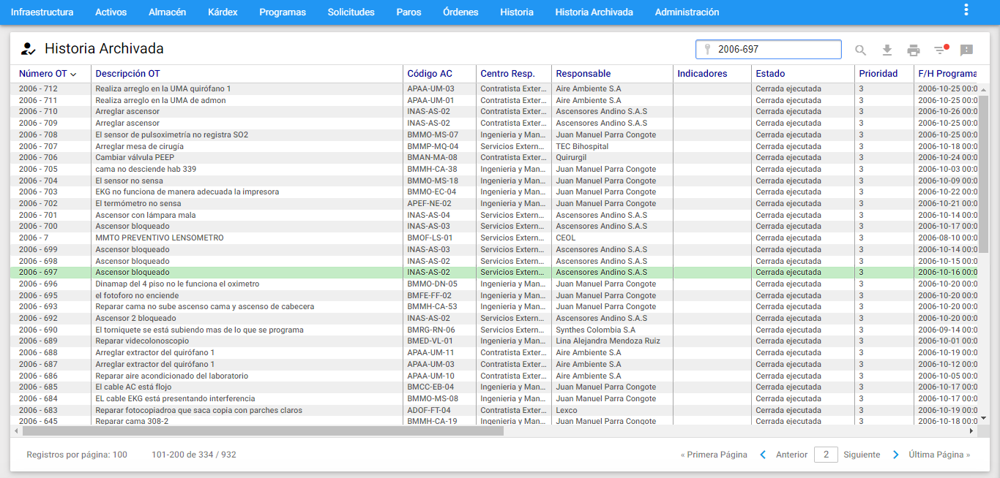

Historia Archivada
- ¿Que es la Historia Archivada?
- ¿Qué tipo de consultas se pueden hacer desde Historia Archivada?.
- Ventana Visor de Historia Archivada
- Ventana Detalle de Historia Archivada
- Eliminar un conjunto de registros archivados.
Son los temas centrales que trata el presente Capítulo.
Conceptos Básicos Historia de Archivada (HA)
La Historia Archivada se refiere a los registros mas antiguos que son transferidos desde la Historia de Mantenimiento, este módulo es independiente de la base de datos, es decir, toda la información a su origen (Historia) que antes era fundamentada en links o enlaces con otros módulos desaparecen y se resuelven quedando con la información real, es decir, ahora todos los campos etán diligenciados y grabados, por lo que la visualización de cada registro es una tabla plana que contiene la misma información pero inmodificable. La Historia Archivada hace que la base de datos se vuelva mas ligera, liviana y ágil.
Es importante tener en cuenta que cuando se envían registros a Historia Archivada se hace posible eliminar o hacer limpieza de registros muy antiguos como Centros de Costo, Terceros, Ubicaciones Físicas, Activos, entre otra información que no tenga uso o no sea vigente.
El envío de registros Históricos a Historia Archivada es un proceso controlado, es decir, este envío se hace por cada cinco mil registros como máximo y estos deben ser preseleccionados en un Subgrupo, el cual puede tardar hasta cinco horas, por ende, se recomienda hacer un respaldo de datos o copia de seguridad previo de efectuar el traslado de los registros.
¿Qué tipo de consultas se pueden hacer desde Historia Archivada?.
Se pueden hacer consultas de registros por diferentes criterios de búsqueda a través del Subgrupo y permite la impresión de un reporte básico para analizar un registro individual (OT, SS o Paro).
Nota: Para enviar, consultar y eliminar la Historia Archivada se debe ingresar con usuario administrador o contar con los permisos específicos para ello.
Ventana Principal de Historia Archivada
Ventana Visor de Historia Archivada
 Imagen 1. Historia Archivada - Visor
Imagen 1. Historia Archivada - Visor
A esta ventana se accede haciendo clic sobre la opción Historia Archivada del Menú Principal. A través de ella se ejecutan todas las funciones dedicadas a administrar los registros archivados. Se visualizan todos los registros de la Historia Archivada o una selección de ellos a través de un subgrupo. La Historia disponible se despliega a través de las páginas. El tamaño de los registros en el visor por cada página es configurable desde administración por medio de un usuario administrador.
Los títulos en azul que encabezan las columnas, permiten ordenar de manera ascendente/descendente la información por cada ítem seleccionado, por medio de un clic en el respectivo encabezado.
Ventana Detalle
 Imagen 2. Historia Archivada - Ventana Detalle
Imagen 2. Historia Archivada - Ventana Detalle
En la gráfica anterior, Ventana Detalle de Órdenes de Trabajo Históricas, se aprecian sus componentes y sus respectivos contenidos. En esta ventana Detalle se encuentra la información relevante al registro seleccionado en el visor. A través de ella se hace consulta de cada campo resuelto, su visualización es una tabla con links resueltos los cuales son inmodificables.
A continuación se describen los campos que componen esta ventana Detalle de Órdenes de Trabajo Históricas. Sobre cada campo se da una breve explicación:
OT: Aparece el número de la Órden de Trabajo asignado por AM cuando fue generada.
F/H Creación: Es la fecha en la cual se creó la Orden de Trabajo. Esta fecha es asignada automáticamente por el sistema y no es modificable.
Descripción: Es un texto corto por medio del cual se indica la naturaleza de la labor a realizar. Debe ser conciso y no dar lugar a ambigüedades, este campo tiene una longitud de 80 caracteres. Se recomienda definir la descripción bajo la siguiente norma: iniciar con un verbo en infinitivo: revisar, corregir, inspeccionar, conectar, etc., continuar con el Objeto de mantenimiento o Activo / Equipo y finalizar con un complemento explicatorio. Ejemplo: Revisar la transmisión delantera del sistema. Cambiar a los rodillos la cobertura de caucho.
Prioridad: Es un número de 1 a 7 que indica la prioridad de realización de la OT. Normalmente 1 significa un trabajo de gran urgencia, mientras que 7 es una labor de baja prioridad.
F/H Programada: En este campo se ingresa la fecha programada para realizar la ejecución de la OT.
Referencia: En este campo se puede ingresar el número de un documento, que sirve como referencia o relación a la OT, ejemplo: Número de una factura, número de una Órden de Compra asociada, o un documento interno de despacho de almacén, etc.
Estado: Este campo está bloqueado y muestra el nombre del Estado de la OT.
Código del Activo: Aquí se establece el Objeto de Mantenimiento, esta selección se hace a través del .
Descripción: En este campo se visualiza la información de la descripción del Activo seleccionado.
Activo Fijo: En este campo se visualiza la información del Número de Activo Fijo del Activo/Equipo que se haya definido en la ficha técnica de este mismo.
Referencia Externa Proveedor: En este campo se visualiza la información de la referencia del Activo/Equipo que se haya establecido en la ficha técnica de este mismo.
Serial: En este campo se visualiza la información del Serial del Activo/Equipoque se haya definido en la ficha técnica de este m ismo.
Alias: En este campo se visualiza la información del Alias del Activo/Equipoque se haya definido en la ficha técnica de este mismo.
Solicitante: En este campo se define el nombre del Solicitante de la OT. Cuando la OT es generada desde una Solicitud de Servicio, este campo contiene el nombre del solicitante ingresado en la Solicitud.
Correo Electrónico: En este campo se define el correo electrónico del Solicitante del servicio.
Centro de Costo: Es el Centro de Costo asignado a la OT que corresponde a los predefinidos en la tabla de infraestructura y que es Responsablde del pago de los consumos de Gasto Real ue dicha OT.
Ubi. Física: Es el lugar físico en el que se realiza la labor.
Centro Responsable: Especifica el Centro Responsable o grupo de mantenimiento, encargado de realizar la labor.
Responsable ejecutor: En este campo se elige a la persona, natural o jurídica, Responsable por la labor ejecutada.
Contrato: Se muestra referenciado el contrato que fue asociado a la OT.
Responsable por la institución: En este campo muestra a la persona de la institución, que acompañó y/o recibió la labor prestada por el Responsable ejecutor, cuando este haya sido un Contratista o Servicio Externo.
T. Trabajo: Indica los Tipos de Trabajo que fueron asociados a la OT.
T. Mtto: Este campo indica el Tipo de Mantenimiento asociado a la OT. }
T. Actividad: Aquí se establece el Tipo de Actividad asociada a la OT. La Actividad de Mantenimiento para una OT, se elige desde la tabla Tipos de Actividad en el módulo de Infraestructura. Este campo trabaja en coordinación con el anterior (Tipo de Mantenimiento).
F/H Paro: Para las OT Correctivas, en este campo se registra la Fecha y hora del daño, falla o avería. La fecha se maneja en formato AAAA/MM/DD (Año, Mes, día); la hora se m aneja en formato Militar (de 24 horas). Cabe anotar, que la fecha y hora consignadas corresponden al momento en que se informó del daño o falla a Mantenimiento, así que es posible que el daño haya ocurrido en una fecha/hora anterior.
T. Estimado: Es un campo netamente informativo, e indica de manera aproximada cuánto Tiempo demoró la labor.
Tiempo Improductivo: En este campo se indicó si la parada del respectivo Activo generó tiempo improductivo. Cuando se dice que el Equipo genera Tiempo Improductivo significa que no está en operación, y por lo tanto, posiblemente improductivo. Este campo se tiene en cuenta al momento del cierre de la OT. Si el indicativo de Tiempo Improductivo está habilitado, *AM calcula y carga el Tiempo Improductivo, en caso contrario no lo hace.
Criterio: Es un campo informativo que despliega el criterio utilizado por AM para haber generado la OT. (Solamente para Órdenes de Trabajo que fueron generadas desde Programadas).
Tarea: Este campo informativo, permite establecer, a través del ordinal de la tarea que muestra, cual fue el PM que generó la OT. Es válido solamente en el caso de Órdenes Programadas.
Control Presupuestal: Esta Opción permite definir si la OT manejó Presupuesto. Para las Órdenes de Trabajo Programadas, esta opción siempre está seleccionada, pero aparece protegida, ya que toda OT Programada conlleva el Presupuesto Aprobado.
Para las Órdenes de Trabajo Manuales, esta opción se estableció en el momento de creación de la misma.
Comentarios: Muestra los comentarios referentes a toda la ejecución de la OT. Los comentarios se visualizan en un sólo recuadro individual.
Vistas Parciales / Pestañas
Gasto Real
Para ingresar a esta opción, se debe dar clic en la pestaña “Gasto Real” de la ventana detalle de Órdene de Trabajo Histórica.
 Imagen 3. Historia Archivada- Gasto Real de una OT
Esta tabla resume los totales de los gastos de Mano de Obra Interna, Mano de Obra Externa, Materiales y Repuestos y Otros Conceptos de Costo. A través de esta ventana de Gasto Real se puede administrar el Gasto Real de la OT Histórica. Se compone de dos zonas:
En la zona superior, aparece la matriz de Gasto Real, que resume los costos reales para la OT, discriminando por TT (En las filas), y por Tipo de Consumo (En las columnas). La última fila y la última columna de la matriz, discriminan la diferencia contra el Presupuesto, conformando así el Control Presupuestal de la OT.
En la zona inferior, aparecen los botones para ingresar mano obra interna, mano obra externa, mat y rep, y o.conceptos. Sin embargo, cabe destacar que son sólo en este caso para consultar el detalle de cada uno de ellos.
Mano de obra Interna
A través de la ventana de GR de Ingreso de Mano de Obra Interna se hace consulta de las personas que fueron ingresadas.
Para ver el detalle de laMO se debe dar clic en el botón adicionar mano de obra interna y dar un clic sobre el registro, en el cual se visualizan los siguientes campos:
 Imagen 4 Historia Archivada- Gasto Real MO
Fecha de Uso: Es la fecha en la cual se utilizó el recurso.
OF: Es el oficio al que pertenece el Responsable asignado. Es un campo de solo lectura, que se establece una vez se selecciona el Responsable.
Responsable: Es la persona que ha ejecutado la OT.
H. Hombre: Es el número de Horas Hombre consumidas por el Responsable en cuestión.
Minutos: Es el número de Minutos, que junto con las horas, conforman el tiempo total consumido.
Tipo Hr.: Dado que un Responsable a través del Oficio del mismo puede poseer varios tipos de Hora, cada uno con un valor distinto, en este campo se muestra registrado el Tipo de Hora que asoció al Responsable de la OT.
Vlr. Hora: Es el valor unitario del tipo de hora (Tipo Hr), que se asoció al Responsable en la OT.
Si se desea continuar consultando el gasto real, se debe un clic en ir a la matriz.
Mano de Obra Externa
A través de la ventana de Ingreso de Mano de Obra Externa se consulta el Gasto Real de Mano de Obra Externa de la OT.
Para ver el detalle de la Mano de Obra Externa se debe dar clic en el botón adicionar mano obra externa y dar un clic sobre el registro, en el cual se visualizan los siguientes campos:
 Imagen 5 Historia Archivada - Gasto Real ME
Imagen 5 Historia Archivada - Gasto Real ME
Fecha de Uso: Es la fecha en la cual se utilizó el recurso.
OF: Es el Oficio al que pertenece el Responsable Externo asignado.
Responsable: Es el Responsable Externo que ha ejecutado la OT.
Costo Unitario por hora/visita: Es el valor o el costo unitario por hora o por visita de parte del Responsable Ejecutor Externo asociado a la OT.
Si se desea continuar consultando el gasto real, se debe un clic en ir a la matriz
Ingresar Materiales y Repuestos
A través de la ventana de Ingreso de Materiales y Repuestos se consulta el consumo real de Materiales y Repuestos de la OT.
Para ver el detalle de Materiales y Repuestos se debe dar clic en el botón adicionar Material y Repuesto y dar un clic sobre el registro, en el cual se visualizan los siguientes campos:
 Imagen 6 Historia Archivada- Gasto Real M y R
Imagen 6 Historia Archivada- Gasto Real M y R
Fecha de Uso: Es la fecha en la cual se utilizó el recurso.
Almacén: Se muestra el Almacen donde se encuentra el Repuesto que se comsumió.
Descripción M y R: Es un campo de solo lectura, que muestra la descripción del material y repuesto seleccionado.
Cantidad: Es la cantidad que se va a consumió del Respuesto en la ejecución de la OT en cuestión.
UM: Es un campo de solo lectura que muestra la unidad de consumo del repuesto seleccionado.
Vlr. Unitario: Es el valor unitario del repuesto consumido en la OT.
Vlr. Total: Este campo es informativo y es calculado por el sistema, contiene el valor total consumido para ese Material y Repuesto. Es el producto del Vlr. Unitario por la Cantidad. Se visualiza en la tabla de Materiales y Repuestos.
Si se desea continuar consultando el gasto real, se debe un clic en ir a la matriz
Ingresar Otros Conceptos de Costo
 Imagen 7. Historia Archivada- Gasto Real OC
Para ver el detalle de Otros Conceptos de Costo o Gastos indirectos, se debe dar clic en el botón adicionar otro concepto y dar un clic sobre el registro, en el cual se visualizan los siguientes campos:
Fecha de Uso: Es la fecha en la cual se utilizó el recurso.
Concepto: Es el “Otro Concepto‟ a cargado a la OT.
Nro. Unidades: Es el número de unidades consumidas del Concepto de Costo seleccionado anteriormente.
Vlr. Unitario: Es el valor presupuestado del “Otro Concepto Costo”. AM sugiere el valor unitario del concepto que se encuentra ingresando al sistema. Sin embargo, es modificable por el usuario.
Vlr. Total: Es el costo total consumido del “Otro Concepto Costo” teniendo en cuenta el número de unidades y el valor unitario.
Info. Adicional: Es un campo donde se definió un pequeño comentario sobre el consumo.
Evaluación de Servicio
Se puede visualizar la evaluación del servicio que fue prestado por el personal de mantenimiento o de servicios en la OT seleccionada. La evaluación la realiza un usuario, previamente autorizado, quien fuera el receptor del servicio, una vez que se ha ya cerrado la OT.
 Imagen 8. Historia Archivada- Evaluación del Servicio
Imagen 8. Historia Archivada- Evaluación del Servicio
Multimedia
 Imagen 9. Historia Archivada- Multimedia
Imagen 9. Historia Archivada- Multimedia
En la gráfica anterior, Ventana Multimedia, se aprecian sus componentes y sus respectivos contenidos. A través de la ventana Multimedia se consulta información adicional a la OT en cada una de sus carpetas asignadas. La multimedia indica la asociación de uno o varios documentos a la OT. AM acepta documentos de extensiones .DOC, XLS, PDF, JPG es decir, de Microsoft Word o Microsoft Excel, Acrobat o Imágenes.
Los documentos anexos pueden contener ayudas necesarias en la ejecución de la OT, planos, manuales técnicos, manuales de normas técnicas de Mantenimiento o de especificaciones detalladas, normas de seguridad, enfoques de acción, procedimientos sobre cómo realizar la labor, listas de verificación, protocolos de prueba u otra información estándar para su ejecución.
A continuación se describen las carpetas que componen esta ventana; cuando se quiera actualizar o ingresar nueva información a la OT, se deberán registrar así:
Que Hacer: Es la información general que aparece en cada pestaña con los campos bloqueados para que el usuario visualice la información básica de la OT.
Documentos: En esta carpeta se relaciona toda clase de documentación relacionada a la OT. Ejemplo: Archivos en Word, PDF, Excel, entre otros.
Imágenes: En esta carpeta se relaciona toda clase de imágenes relacionadas a la OT. Ejemplo: Imágenes en formato JPG, PNG, entre otros.
Videos: En esta carpeta se relacionan porciones de videos relacionados a la OT. Ejemplo: Videos en formato wmv y mp4.
Para ingresar a una carpeta específica se debe de dar un doble clic:
 Imagen 10. Historia Archivada - Detalle Multimedia
Imagen 10. Historia Archivada - Detalle Multimedia
Los archivos tipo JGP, WORD, PDF, EXCEL para visualizar se deben descargar haciendo clic en el ícono .
 Imagen 11. Historia Archivada- Descargar Multimedia
Imagen 11. Historia Archivada- Descargar Multimedia
Ventana submenú de Historia Archivada
Indicadores
Es posible saber cuáles registros de SS, OT y Paros, tienen Multimedia, Servicio Evaluado y Firma de Recibido (AMovil) directamente desde la ventana visor, sobreponiendo el cursor en el ícono de Indicadores ubicado en la parte superior derecha de la ventana mostrando un conjunto de pelotas de colores que indican el tipo de información definida y asociada, como se muestra a continuación:
 Imagen 12. Historia Archivada- Indicadores
Imagen 12. Historia Archivada- Indicadores
El significado de los colores es el siguiente:
- Naranja: Órden que tiene asociado archivos de imágenes, videos y/o documentos en la pestaña Multimedia.
- Blanco: Indican SS/OT que tienen registrada la firma de recibido (AMovil)
- Azul: Órden con servicio evaluado.
Subgrupos
Se usa para seleccionar grupos de Órdenes de Trabajo Históricas, Solicitudes de Servicio y Paros que cumplen con un conjunto de filtros o criterios. El objetivo para hacerlo es realizar un estudio posterior sobre los registros seleccionados en el subgrupo. Para ingresar a esta opción se debe dar clic al icono de filtro azul , ubicado en la parte superior derecha de la ventana Visor de Historia.
 Imagen 13. Historia Archivada- Ir a Subgrupos
Cada criterio trabaja en conjunto con los demás, con el operador intersección.
Cada criterio aparece inicializado en un valor global que permite mostrar todas las Órdenes de Trabajo Históricas, Solicitudes de Servicio y Paros. Lo que significa que de no escoger un criterio se obtiene como resultado del subgrupo, el mismo conjunto completo de todas las OT Históricas, SS y PA.
AM mantiene activo cualquier subgrupo en cada módulo, hasta que el usuario lo modifique o restablezca los valores estándar. Esto se visualiza con una pelota de color ojo sobre el ícono, también se visualiza en la parte inferior izquierda el número de registros encontrados sobre el total de registros (N/M).
El programa permite entonces hacer selección de un grupo de cualquier tipo de los tres registros mencionados de acuerdo con los criterios seleccionados en la siguiente ventana.
Los campos de datos que constituyen criterio de selección en la Ventana Subgrupo de OT Históricas, SS y PA, son los siguientes:
 Imagen 14. Historia Archivada- Ir a Subgrupos
Imagen 14. Historia Archivada- Ir a Subgrupos
1. FILTRAR POR TIPO DE REGISTRO
Tipo de Registro: Tres tipos de registros conforman la Historia de Mantenimiento de SS, OT y Paros/Averías. Con este filtro se seleccionan los registros de un tipo, de todos los tipos o de alguna combinación de ellos.
2. FILTRAR POR CAMPOS DEL ACTIVO ASOCIADO A LA ORDEN DE TRABAJO, PARO O SOLICITUD DE SERVICIO
AC-Alias: Este campo filtra las OT Históricas, SS y PA para los Activos cuyo Alias corresponda a los valores aquí definidos. En este campo se pueden utilizar los comodines (%).
AC-Código: Esta selección agrupa las OT Históricas, SS y PA cuyo Activo/Equipo coincidan con el relacionado en este criterio. Es posible definir el código completo o una porción del mismo. Por ejemplo: si se escribe 341%, se seleccionan todas las OT Históricas, SS y PA cuyo código de Activo inicia por 341. El porcentaje (%) es un carácter comodín que significa “todos”. También, es posible seleccionar el Activo a través del visor de Activos. Para ello se da un clic sobre el icono de filtro de la respectiva ventana. Acto seguido se muestra la ventana de visor de Activos junto con la posibilidad de filtrar. Una vez se encuentra dicho Activo, se selecciona dando un clic sobre cualquiera de sus campos. A continuación, se da un clic sobre botón Aceptar de esa ventana o se hace doble clic sobre el registro seleccionado. Inmediatamente ese código aparece en el primer campo de la línea de Activo en la forma de registro de OT, SS y PA.
AC-Descripción: Selecciona las OT Históricas, SS y PA asociados a los Activos según criterios que se fundamenten en su descripción. Ejemplo: %Motor% selecciona todos los Activos en cuya descripción, en cualquier posición, tengan la palabra “Motor”.
AC-Número Activo Fijo: Este campo preselecciona las Órdenes de Trabajo Históricas, SS y PA para el o los Activos cuyo Número de Activo corresponde a los valores aquí definidos. En este campo se pueden utilizar los comodines.
AC-Referencia: Esta opción permite seleccionar las OT Históricas, SS y PA de acuerdo con su número de referencia.
AC-Serial: Esta alternativa permite seleccionar las OT Históricas, SS y PA de acuerdo con el número serial del Equipo/Activo objeto de mantenimiento. El campo acepta comodines(%).
3. FILTRAR POR CAMPOS DE LA ORDEN DE TRABAJO
Causa de Cierre: Permite buscar las OT Históricas que tienen una Causa de Cierre específica, es posible utilizar comodines. Existen dos formas de definir la Causa de Cierre de la OT Histórica. La primera es seleccionando la Causa de la lista desplegable. La segunda es dando clic al icono de candado , este se desbloquea para digitar manualmente digitando a continuación segmentos del nombre de la Causa de Cierre utilizando comodines. Cuando se utilizan comodines (%), es posible seleccionar OT Histórica cuya Causa de Cierre tenga parte del nombre igual.
Causa de Falla: Permite buscar las OT Históricas, SS y PA que tienen una Causa de Falla específica. Existen dos formas de definir la Causa de Falla de la OT, SS y PA. La primera es seleccionando la Causa de Falla de la lista desplegable. La segunda es dando clic al icono de candado , este se desbloquea y a continuación se digitan segmentos del nombre de la Causa de Falla. Cuando se utilizan comodines, es posible seleccionar OT, SS y PA cuya Causa de Falla tenga parte del nombre igual.
Centro de Costo: Permite la selección de OT Históricas, SS y PA de acuerdo con el Centro de Costo asignado a ella. Existen dos formas de definir el Centro de Costo. La primera es seleccionando el Centro de Costo de la lista desplegable. La segunda es dando clic al icono de candado , luego este se desbloquea digitando a continuación segmentos del nombre del Centro de Costo. Cuando se utilizan comodines (%), es posible seleccionar las OT Históricas, SS y PA pertenecientes a Centros de Costo que tengan parte del nombre igual. Por ejemplo: Sistema% selecciona todas los registros Históricas, SS y PA en cuyo Centro de Costo exista la palabra Sistema, independiente de si se está hablando del Sistema de Agua, de Vapor o de Energía.
Centro responsable: Agrupa las OT Históricas, SS y PA cuyo Centro Responsable sea el seleccionado, es posible utilizar comodines. Existen dos formas de definir el Centro Responsable. La primera es seleccionando el Centro Responsable de la lista desplegable. La segunda es dando clic al icono de candado “Utilizar comodines” y digitando a continuación segmentos del nombre del Centro Responsable utilizando comodines.
Contrato: Permite filtrar las OT Históricas que se encuentren asociadas a un contrato ya definido en la tabla de “CONTRATO” en el módulo de Infraestructura. Existen dos formas de definir el Contrato de la OT Histórica. La primera es seleccionando el Contrato de la lista desplegable. La segunda es dando clic al icono de candado , este se desbloquea y digitando a continuación segmentos del nombre del Contrato utilizando comodines (%). Cuando se utilizan comodines, es posible seleccionar OT Histórica cuyo Contrato tenga parte del nombre igual.
Criterio de Generación: Permite seleccionar el subconjunto de OT Históricas generadas desde PM, bajo el Criterio de Programación “XX” seleccionado. Es posible utilizar comodines (%). Los criterios son:
| Abreviatura | Significado |
|---|---|
| MM | Mensual |
| SS | Semanal |
| SM | Semestral |
| AN | Anual |
| DD | Días (Mín. 3) |
| SA | Semanas del año |
| +M | Meses (mas de uno) |
| +S | Semanas (mas de una) |
| KI | Contador por Incremento |
| KL | Contador por Límite |
| FK | Frecuencia y Contador |
| TM | Trimestral |
| +K | Contador (mas de uno) |
| ?? | Sin Criterio |
Descripción: Esta opción permite seleccionar las OT Históricas, SS y PA que cumplan con el criterio de selección establecido en este campo, es posible utilizar la funcionalidad de comodines (%).
Efecto de Falla: Este campo permite seleccionar las OT Históricas que posean una causa de falla específica, es posible utilizar comodines. Existen dos formas de definir el Efecto de Falla de la OT Histórica. La primera es seleccionando el Efecto de Falla de la lista desplegable. La segunda es dando clic al icono de candado este se desbloquea y permite digitar a continuación segmentos del nombre del Efecto de Falla. Se puede usar comodines (%).
Estado General: Permite seleccionar las OT Históricas de acuerdo con su estado de cierre: “Cerradas” que fueron normalmente ejecutadas o “Canceladas”..
Estado Particular: Permite seleccionar las OT Históricas, SS y PA de acuerdo con su estado. Al descolgar aparece el listado de todos los estados posibles para una Orden de Trabajo Histórica, SS y PA.
Comentarios: Filtra los registros que coincidan con el comentario aquí en este campo.
FF de Cierre: Este criterio filtra las OT Históricas por un rango de la Fecha de Cierre. Aparecen dos campos: Desde y Hasta. En cada uno de ellos se digita una fecha. De no digitar el campo “Desde”, se buscan los registros Históricas cuya fecha de cierre esté en el lapso anterior a la fecha digitada en “Hasta”. De no digitar el campo “Hasta”, se buscan las OT Históricas cuya fecha de cierre esté en un lapso posterior a la digitada en “Desde”.
FF Consumo en Materiales: Este criterio filtra las Órdenes de Trabajo Históricas por un rango de la Fecha de consumo de materiales en el Gasto Real de la OT. Aparecen dos campos: Desde y Hasta. En cada uno de ellos se digita una fecha. De no digitar el campo “Desde”, se buscan las Órdenes de Trabajo cuya fecha de consumo de materiales esté en el lapso anterior a la fecha digitada en “Hasta”. De no digitar el campo “Hasta”, se buscan las OT cuya fecha de consumo de materiales esté en un lapso posterior a la digitada en “Desde”.
FF Consumo en Mano de Obra: Este criterio filtra las OT Históricas por un rango de la Fecha de consumo de mano de obra en el Gasto Real de la OT. Aparecen dos campos: Desde y Hasta. En cada uno de ellos se digita una fecha. De no digitar el campo “Desde”, se buscan los registros cuya fecha de consumo de mano de obra esté en el lapso anterior a la fecha digitada en “Hasta”. De no digitar el campo “Hasta”, se buscan las OT cuya fecha de consumo de mano de obra esté en un lapso posterior a la digitada en “Desde”.
FF Consumo en Otros Conceptos: Este criterio filtra las OT Históricas por un rango de la Fecha de consumo de gastos indirectos en el Gasto Real de la OT. Aparecen dos campos: Desde y Hasta. En cada uno de ellos se digita una fecha. De no digitar el campo “Desde”, se buscan los registros cuya fecha de consumo de mano de obra esté en el lapso anterior a la fecha digitada en “Hasta”. De no digitar el campo “Hasta”, se buscan las OT cuya fecha de consumo esté en un lapso posterior a la digitada en “Desde”.
Fecha de Daño:Este criterio filtra los registros Históricos por un rango de la Fecha de Daño, Paro o Avería. Aparecen dos campos: Desde y Hasta. En cada uno de ellos se digita una fecha. De no digitar el campo “Desde”, se buscan las OT Históricas cuya fecha de Daño esté en el lapso anterior a la fecha digitada en “Hasta”. De no digitar el campo “Hasta”, se buscan las OT Históricas cuya fecha de Daño esté en un lapso posterior a la digitada en “Desde”.
FF Inicio de Trabajo: Este criterio filtra los registros Históricos por un rango de la Fecha de Inicio de Trabajos. Aparecen dos campos: Desde y Hasta. En cada uno de ellos se digita una fecha. De no digitar el campo “Desde”, se buscan las Órdenes de Trabajo Históricas cuya fecha de inicio esté en el lapso anterior a la fecha digitada en “Hasta”. De no digitar el campo “Hasta”, se buscan los registros cuya fecha de inicio esté en un lapso posterior a la digitada en “Desde”.
FF Fin de Trabajo: Este criterio filtra los registros Históricos por un rango de la Fecha de Fin de Trabajos. Aparecen dos campos: Desde y Hasta. En cada uno de ellos se digita una fecha. De no digitar el campo “Desde”, se buscan los registros cuya fecha de fin de trabajos esté en el lapso anterior a la fecha digitada en “Hasta”. De no digitar el campo “Hasta”, se buscan las OT Históricas cuya fecha de fin de trabajos esté en un lapso posterior a la digitada en “Desde”.
Fecha de Creación: Este criterio filtra los registros Históricos por rango en la fecha de su creación. Aparecen dos campos: Desde y Hasta. En cada uno de ellos se digita una fecha. De no digitar el campo “Desde”, se buscan las Órdenes de Trabajo Históricas cuya fecha programada esté en el lapso anterior a la fecha digitada en “Hasta”. De no digitar el campo “Hasta”, se buscan los registros cuya fecha de creación esté en un lapso posterior a la digitada en “Desde”.
FF Programada: Este criterio filtra las OT Históricas por un rango de la Fecha Programada. Aparecen dos campos: Desde y Hasta. En cada uno de ellos se digita una fecha. De no digitar el campo “Desde”, se buscan las OT Históricas cuya fecha programada esté en el lapso anterior a la fecha digitada en “Hasta”. De no digitar el campo “Hasta”, se buscan las OT Históricas cuya fecha de programación esté en un lapso posterior a la digitada en “Desde”.
Gasto Real Mano Obra: Al seleccionar esta opción se habilita una lista desplegable donde se escoge el criterio deseado, junto con un cuadro donde se digita el valor de comparación. Los criterios son: Igual (=), Mayor (>) y Menor (<). Estos criterios actúan en comparación con el valor digitado en la casilla que se activa al lado del operador aritmético. Ejemplo: si se escoge el criterio Mayor (>) y la cantidad es 100.000, eso significa que filtrara todas las OT Históricas cuyo Gasto Real en la Mano de Obra Interna sea Mayor a Cien Mil Pesos o unidades monetarias.
Gasto Real Materiales y Repuestos: Al seleccionar esta opción se habilita una lista despegable donde se escoge el criterio deseado, junto con un cuadro donde se digita el valor de comparación. Los criterios son: Igual (=), Mayor (>) y Menor (<). Estos criterios actúan en comparación con el valor digitado en la casilla que se activa al lado del operador aritmético. Ejemplo: si se escoge el criterio Mayor (>) y la cantidad es 100.000, eso significa que filtrara todas las OT Históricas cuyo Gasto Real en Materiales y Repuestos sea Mayor a Cien Mil Pesos o unidades monetarias.
Gasto Real Otros Conceptos: Al seleccionar esta opción se habilita una lista despegable donde se escoge el criterio deseado, junto con un cuadro donde se digita el valor de comparación. Los criterios son: Igual (=), Mayor (>) y Menor (<). Estos criterios actúan en comparación con el valor digitado en la casilla que se activa al lado del operador aritmético. Ejemplo: si se escoge el criterio Mayor (>) y la cantidad es 100.000, eso significa que filtrara todas las OT Históricas cuyo Gasto Real en Otros Conceptos de Costo sea Mayor a Cien Mil Pesos o unidades monetarias.
Responsable por la Institución: Filtra las OT Históricas de acuerdo al Responsable por Institución o la persona que recibe a satisfación. Existen dos formas de buscar el Responsable. La primera es seleccionándolo de la lista desplegable. La segunda es dando clic al icono de candado el cual se desactiva permitiendo digitar segmentos del nombre del Responsable, en el cual también es posible usar comodines (%). Cuando se utilizan comodines, es posible seleccionar las OT cuyo Responsable tenga una parte del nombre igual.
Número de la OT: Permite filtrar OT Históricas, con base en su número consecutivo. Para ello se define en el criterio un rango. Aparecen cuatro campos, para ubicar el comienzo del rango “Desde” (Año-Consecutivo) y el fin del rango “Hasta” (Año- Consecutivo). De no digitar los campos “Desde”, se buscan las OT Históricas cuyo número es inferior al digitado en “Hasta”. De no digitar los campos “Hasta”, se buscan las OT Históricas cuyo número es posterior al digitado en “Desde”.
Prioridad: Permite hacer subgrupo de OT Históricas, cuya prioridad es la seleccionada en este criterio, habilitándose una lista despegable desde el nivel 1 hasta el nivel 7.
Referencia: Esta opción permite seleccionar las OT Históricas que tienen asociado el valor seleccionado, en el campo Referencia. Es posible utilizar comodines (%).
Responsable: Filtra las SS, PA y OT Históricas de acuerdo al Responsable ejecutor. Existen dos formas de buscar el Responsable. La primera es seleccionándolo de la lista desplegable. La segunda es dando clic al icono de candado el cual se desactiva permitiendo digitar segmentos del nombre del Responsable. En este campo también es posible usar comodines (%), es posible seleccionar las OT cuyo Responsable ejecutor tenga una parte del nombre igual.
Responsable en Gasto Real: Permite filtrar las OT Históricas cuyo Responsable ejecutor en Gasto Real está definido en la Mano de Obra del Gasto Real. Existen dos formas de buscar el Responsable. La primera es seleccionándolo de la lista desplegable. La segunda es dando clic al icono de candado el cual se desactiva permitiendo digitar segmentos del nombre del Responsable. En este campo también es posible usar comodines (%), es posible seleccionar las OT cuyo Responsable definido en el Gasto Real, tenga una parte del nombre igual.
RP-Código: Filtra las OT Históricas cuyo Repuesto fue asociado en el Gasto Real en Materiales y Repuestos. Para definir el Repuesto de la OT Histórica, primero se elige el almacén de la lista desplegable en el primer campo. Luego de seleccionarlo, se activa automáticamente el segundo campo que permite seleccionar el Repuesto a través del visor de Materiales y Repuestos. Para ello se da un clic sobre el icono de filtro . Acto seguido se muestra la ventana de visor de Materiales y Repuestos junto con la de subgrupo para poder ubicarlo. Una vez se encuentra el Repuesto en la Tabla de visor de Materiales y Repuestos, se selecciona dando un clic sobre cualquiera de sus campos. A continuación, se da un clic sobre botón Aceptar de esa ventana o se hace doble clic sobre el registro seleccionado. Inmediatamente ese código aparece en el segundo campo en la forma de registro de Ordenes de Trabajo Histórica.
Solicitante (Digitado Manualmente): Permite la preselección de las OT Históricas, SS y PA cuyo Solicitante fue especificado manualmente, y coincide con el definido en este campo. Se pueden utilizar los comodines (%).
Solicitante (Incluido en terceros - Tipo RI): Permite la preselección de las OT Históricas, SS y PA cuyo Solicitante fue seleccionado de la tabla de terceros (como RI) y coincide con el definido en este criterio. Existen dos formas de definir el Solicitante de la OT, SS y PA. La primera es seleccionando el Solicitante de la lista desplegable. La segunda es dando clic al icono de candado y digitando a continuación segmentos del nombre del Solicitante utilizando comodines (%). Cuando se utilizan comodines, es posible seleccionar OT Histórica, SS y PA cuyo Solicitante tenga parte del nombre igual.
Tipo de Actividad: Filtra las OT Históricas, SS y PA por Tipo de Actividad. Existen dos formas de definir el Tipo de Actividad de la OT Histórica, SS y PA. La primera es seleccionando el Tipo de Actividad de la lista desplegable. La segunda es dando clic al icono de candado y digitando a continuación segmentos del nombre del Tipo de Actividad utilizando comodines (%). Cuando se utilizan comodines, es posible seleccionar OT Histórica, SS y PA cuyo Tipo de Actividad tenga parte del nombre igual.
Tipo de Mantenimiento: Filtra las OT Históricas, SS y PA por el Tipo de Mantenimiento elegido de la lista desplegable. Al activar ésta opción se activan las siguientes opciones: Correctivo, Preventivo, Preventivo Manual, Predictivo, Metrología, Inspección, Lubricación, Otro-Mantto y Otro.
Tipo de Trabajo: Agrupa las OT Históricas, SS y PA de acuerdo al TT seleccionado, sin importar si tienen otros tipos de trabajo activos. Incluso, es posible seleccionarlos todos al mismo tiempo.
Ubicación Física: Permite la selección de las OT Históricas, SS y PA cuyo Activo esté en la ubicación física que se determina en este criterio. Existen dos formas de filtrar la Ubicación Física. La primera es seleccionando la Ubicación Física de la lista desplegable. La segunda es dando clic al icono de candado el cual se desactiva y permite digitar a continuación segmentos del nombre de la Ubicación Física. Es posible utilizar comodines (%) y seleccionar OT cuyo Activo esté en una Ubicación Física que tenga parte del nombre igual. Por ejemplo: Cava% selecciona los registros cuya Ubicación Física empieza por la palabra Cava, independientemente de si se está hablando de la Cava de Fermentación, Maduración o Contrapresión.
4. FILTRAR POR CAMPOS PARTICULARES DE PAROS
Turno: Permite filtrar de los PA Históricos cuyo turno laboral indique en el cual se produjo el paro. Se puede elegir entre los turnos 1, 2, 3 y 4.
Módulo: Permite filtrar de los PA Históricos, cuyo campo tenga definido información documental, variable, según las necesidades propias de la Organización.
Operación: Permite filtrar de los PA Históricos cuya operación fue la que se registró en el momento en que se produjo el fallo, daño o avería.
Operador: Permite filtrar de los PA Históricos cuyo operario de mantenimiento corresponde al que está registrado en la tabla de Terceros del módulo de Infraestructura. La selección del operario también se puede realizar utilizando los comodines (%).
Referencia: Permite filtrar los PA Históricos que tengan registrada la referencia elegida. En este campo se pueden utilizar los comodines.
Restricción: Permite la selección de los PA Históricos que hayan sido o no restrictivo en el momento en que se presentó el fallo del Activo/Equipo.
5. FILTRAR POR CAMPOS PARTICULARES DE SOLICITUDES DE SERVICIO
Estado: Permite seleccionar las SS Históricas de acuerdo con su estado de cierre: Cerrada no ejecutada, Cerrada ejecutada, Cerrada con OT o Cerrada Retroalimentada.
Nota: Es importante tener en cuenta que cuando se están realizando los subgrupos, se pueden utilizar uno o varios de los criterios anteriores, simultáneamente. Además es posible hacer unión de selecciones. Esto significa que inmediatamente después de haber realizado una selección, es posible hacer otra y unir el resultado de las dos. Para ello, tras definir los criterios de la segunda selección, se da un clic al botón Mas o Menos en lugar de darlo al botón aceptar .
Ventana Submenú de Historia Archivada
Ir a OT
Esta opción de búsqueda rápida se encuentra ubicada al lado superior derecho de la ventana Visor. Al darle clic al ícono , se abre un campo al lado izquierdo que indica a digitar el número de la OT, SS o Paro. Luego de digitar la información, se presiona la tecla Enter y a continuación se sombrea el registro deseado en el Visor:
 _Imagen 15. Historia Archivada - Exportar_las OT, SS y PA
En caso de escribir el consecutivo con algún error o no existente, el sistema muestra un mensaje de alerta:
 Imagen 16. Mensaje Alerta - Ir a OT
Imagen 16. Mensaje Alerta - Ir a OT
Si se tiene un subgrupo establecido y se digita el consecutivo de una OT, SS o Paro que no esté dentro del subgrupo, el sistema muestra un mensaje de adventencia, donde se le pregunta al usuario si desea deshacer el subgrupo:
 Imagen 17. Mensaje Advertencia - Ir a OT
Imagen 17. Mensaje Advertencia - Ir a OT
Exportar
Esta opción permite exportar los ítems o campos de la ficha técnica de OT, bien sea, para exportar todas las OTs o las provenientes de un subgrupo a un archivo de Excel que se descarga automáticamente en la estación cliente. Para efectuar este proceso, se da clic en Exportar mostrando las siguientes opciones de exportación:
En la gráfica anterior, se aprecian sus componentes y sus respectivos contenidos:
Exportar Visor: Esta opción exporta todas los registros seleccionadas en el visor mediante un subgrupo.
Exportar Todos los Registros: Esta opción exporta todas las OT, SS y PA existentes, sin importar cualquier subgrupo activo. Luego de escoger una de las opciones anteriores, en la parte inferior aparece seleccionado por defecto el recuadro exportar todos los campos pero si se prefiere uno o varios, se debe des-seleccionar y a continuación hacer clic en los recuadros a exportar, una vez elegida la información, se da clic en el botón inferior exportar el cual genera un archivo de Excel que se descarga automáticamente. El objetivo de esta exportación es llevar toda la información de a un archivo plano, para luego ser analizadas.
 _Imagen 18. Historia Archivada - Exportar_las OT, SS y PA
_Imagen 18. Historia Archivada - Exportar_las OT, SS y PA
Servicios
Reportes
Este comando permite visualizar el reporte relacionado a la OT, SS y PA en Historia Archivada. Existe el siguiente reporte básico disponibles
 Imagen 19. Historia Archivada - Exportar
Imagen 19. Historia Archivada - Exportar
El anterior reporte puede ser seleccionado para una o varios registros a través de las siguientes opciones:
Todos los Registros: Con esta opción se realiza la impresión de todas las OT, SS y PA Históricos existentes en la base de datos, sin importar cualquier subgrupo activo.
Registros del Visor: Esta opción permite hacer una impresión de todas las OT que están seleccionadas en la Ventana Visor, es decir los registros que están seleccionados en el subgrupo actual.
Registro Seleccionado: Esta opción permite hacer una impresión de la OT, SS y PA Históricos que esta seleccionado en la Ventana Visor (el cursor verde se encuentra sobre sí).
Una vez seleccionada una de las opciones anteriores se procede a elegir uno de los reportes mostrados.
Subtítulo: En este campo es posible escribir un poco menos de una línea de información, bien sea para indicar un tipo documentación del Reporte. Lo que se escriba aquí aparecerá en la línea inferior del título estándar.
Para visualizar los reportes, se selecciona el reporte y luego se da clic al botón imprimir.
Para Exportar los reportes, se selecciona el reporte y luego se da clic al botón exportar.
Para Cerrar la ventana de los Reportes, se da clic en el botóncerrar.
Transacciones
Eliminar Masivamente
Eliminar masivamente se ejecuta cuando se tiene la certeza de la existencia datos que no se necesitarán mas en adelante. Borrar masivamente Historia Archivada, implica eliminar los registros definitivamente, lo que quiere decir que no se podrán recuperar.
Nota: El resultado de ejecutar este proceso da como resultado la ligereza de la base de datos, es decir, eliminar masivamente datos basura sobre Terceros y Activos, que ya no sean útiles.
Para ir a la transacción sobreponer el cursor sobre el módulo de Historia Archivada y dar clic en la opción Eliminar Masivamente, como se indica a continuación:
Imagen 20. Historia Archivada - Ir a Eliminar Masivamente
Para eliminar un conjunto de registros se debe primero realizar un Subgrupo no mayor de 5000 mil registros (este proceso puede tardar hasta 5 horas dependiendo del subgrupo), de no hacerlo el sistema muestra un mensaje de advertencia:
 Imagen 21. Historia - Alerta Eliminar Masivamente
Imagen 21. Historia - Alerta Eliminar Masivamente
Una vez se tenga el conjunto de registros preseleccionados con el Subgrupo proceder con la transacción así:
 Imagen 22. Historia Archivada - Alerta Eliminar Masivamente
Imagen 22. Historia Archivada - Alerta Eliminar Masivamente
Se puede eliminar un registro de OT, SS, Paro o un conjunto de registros preseleccionados:
Todas las HI del visor: Esta opción eliminar todos los registros históricos de la Ventana Visor, es decir, los registros preseleccionados a través del Subgrupo actual.
La HI seleccionada: Esta opción permite eliminar el registro que está seleccionado en la Ventana Visor (el cursor verde se encuentra sobre él).
Para continuar dar clic en el botón eliminar historia ubicado debajo de las opciones anteriores, el sistema muestra un mensaje alerta:
 Imagen 23. Historia Archivada - Mensaje Advertencia Eliminar Masivamente
Imagen 23. Historia Archivada - Mensaje Advertencia Eliminar Masivamente
Para finalizar el proceso dar clic en aceptar, y el sistema confirma a través de un mensaje aviso:
 Imagen 24. Historia - Aviso Satisfactorio Eliminar Masivamente
Imagen 24. Historia - Aviso Satisfactorio Eliminar Masivamente